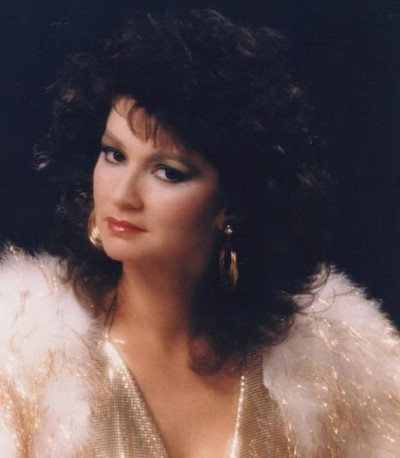

Carolyn Cline wearing a vibrant red outfit with black and white details. Dressed as Patsy Cline.
Carolyn Cline wearing a silver sequined dress with gold sequined straps and a feather jacket.

Carolyn Cline is wearing a metallic gold dress and a white feather jacket. (Photo taken by Bruno Bernard).
This photo was used as the cover for her CD, “A Tribute to Patsy Cline”. Learn more about the legendary country singer on Wikipedia: Patsy Cline.
Bruno Bernard, professionally known as Bernard of Hollywood, was a renowned glamour photographer of Hollywood's Golden Era, often referred to as the "Discoverer" of Marilyn Monroe.